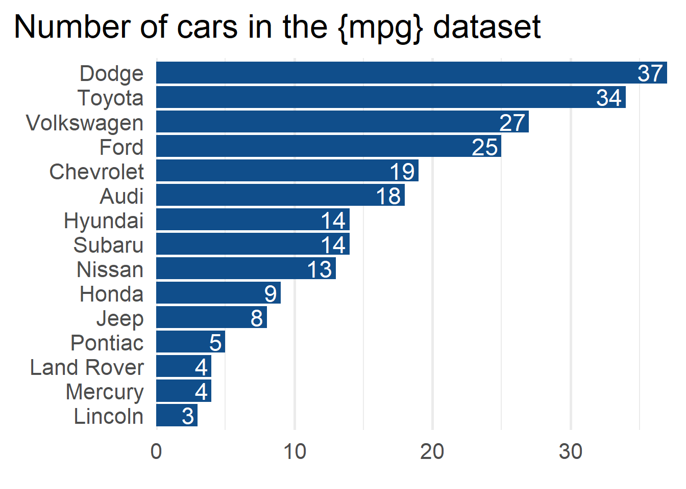

── Attaching core tidyverse packages ──────────────────────── tidyverse 2.0.0 ──
✔ dplyr 1.1.2 ✔ readr 2.1.4
✔ forcats 1.0.0 ✔ stringr 1.5.0
✔ ggplot2 3.4.2 ✔ tibble 3.2.1
✔ lubridate 1.9.2 ✔ tidyr 1.3.0
✔ purrr 1.0.1
── Conflicts ────────────────────────────────────────── tidyverse_conflicts() ──
✖ dplyr::filter() masks stats::filter()
✖ dplyr::lag() masks stats::lag()
ℹ Use the conflicted package (<http://conflicted.r-lib.org/>) to force all conflicts to become errors
mpg
# A tibble: 234 × 11
manufacturer model displ year cyl trans drv cty hwy fl class
<chr> <chr> <dbl> <int> <int> <chr> <chr> <int> <int> <chr> <chr>
1 audi a4 1.8 1999 4 auto… f 18 29 p comp…
2 audi a4 1.8 1999 4 manu… f 21 29 p comp…
3 audi a4 2 2008 4 manu… f 20 31 p comp…
4 audi a4 2 2008 4 auto… f 21 30 p comp…
5 audi a4 2.8 1999 6 auto… f 16 26 p comp…
6 audi a4 2.8 1999 6 manu… f 18 26 p comp…
7 audi a4 3.1 2008 6 auto… f 18 27 p comp…
8 audi a4 quattro 1.8 1999 4 manu… 4 18 26 p comp…
9 audi a4 quattro 1.8 1999 4 auto… 4 16 25 p comp…
10 audi a4 quattro 2 2008 4 manu… 4 20 28 p comp…
# ℹ 224 more rows
manufacturers |>mutate(manufacturer =fct_infreq(manufacturer) |>fct_rev() ) |>ggplot(aes(y = manufacturer)) +geom_bar(fill ='dodgerblue4')+geom_text(data =count(manufacturers, manufacturer),mapping =aes(x = n, y = manufacturer, label = n ),hjust =1,nudge_x =-0.25,color ='white',size =6 ) +labs(x =element_blank(),y =element_blank(), title ='Number of cars in the {mpg} dataset' ) +theme_minimal(base_size =20,base_family ='Source Sans Pro' ) +theme(panel.grid.major.y =element_blank(),panel.grid.minor.y =element_blank(),plot.title =element_text(family ='Merriweather',size =rel(1.2) ),plot.title.position ='plot' ) +scale_x_continuous(expand =expansion(mult =c(0, 0.01)) )
Warning in grid.Call(C_stringMetric, as.graphicsAnnot(x$label)): font family
not found in Windows font database
Warning in grid.Call(C_stringMetric, as.graphicsAnnot(x$label)): font family
not found in Windows font database
Warning in grid.Call(C_stringMetric, as.graphicsAnnot(x$label)): font family
not found in Windows font database
Warning in grid.Call(C_textBounds, as.graphicsAnnot(x$label), x$x, x$y, : font
family not found in Windows font database
Warning in grid.Call(C_textBounds, as.graphicsAnnot(x$label), x$x, x$y, : font
family not found in Windows font database
Warning in grid.Call(C_textBounds, as.graphicsAnnot(x$label), x$x, x$y, : font
family not found in Windows font database
Warning in grid.Call(C_textBounds, as.graphicsAnnot(x$label), x$x, x$y, : font
family not found in Windows font database
Warning in grid.Call(C_textBounds, as.graphicsAnnot(x$label), x$x, x$y, : font
family not found in Windows font database
Warning in grid.Call(C_textBounds, as.graphicsAnnot(x$label), x$x, x$y, : font
family not found in Windows font database
Warning in grid.Call(C_textBounds, as.graphicsAnnot(x$label), x$x, x$y, : font
family not found in Windows font database

manufacturers |>mutate(manufacturer =fct_infreq(manufacturer) |>fct_rev() ) |>ggplot(aes(y = manufacturer)) +geom_bar(just =1, fill ='dodgerblue4', width =0.4 ) +geom_text(data =count(manufacturers, manufacturer),mapping =aes(x = n, y = manufacturer, label = n ),hjust =1,vjust =0,nudge_y =0.1,color ='grey30',fontface ='bold',size =5.5 ) +geom_text(data =count(manufacturers, manufacturer),mapping =aes(x =0, y = manufacturer, label =str_to_title(manufacturer) ),hjust =0,vjust =0,nudge_y =0.1,nudge_x =0.05,color ='grey30',fontface ='bold',size =5.5 ) +labs(y =element_blank(), x =element_blank(),title ='Number of cars in the {mpg} dataset' ) +theme_minimal(base_size =20,base_family ='Source Sans Pro' ) +theme(panel.grid =element_blank(),plot.title =element_text(family ='Merriweather',size =rel(1.2) ),plot.title.position ='plot' )+geom_vline(xintercept =0) +scale_x_continuous(breaks =NULL, expand =expansion(mult =c(0, 0.01)) ) +scale_y_discrete(breaks =NULL)
Warning in grid.Call(C_textBounds, as.graphicsAnnot(x$label), x$x, x$y, : font
family not found in Windows font database
Warning in grid.Call(C_textBounds, as.graphicsAnnot(x$label), x$x, x$y, : font
family not found in Windows font database